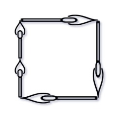

473. 火柴拼正方形
回溯 + 4 条边桶：火柴从大到小逐根试放；剩余相同的边只试一条，空边失败就整支剪掉。
思路
total % 4 != 0直接 false；side = total / 4，每条边都要恰好凑到 side。Arrays.sort后从大到小放：大火柴先定位置，失败得早、剪得狠。- 两个剪枝：剩余长度相同的边只试一条（
Set去重）；放进空边失败则其余空边等价，break。 - 所有火柴放下（每步都没超 side）即 true；某根哪儿都放不下就回溯。
图解
最优解
1import java.util.*;2 3class Solution {4 public boolean makesquare(int[] matchsticks) {5 int total = 0;6 for (int x : matchsticks) total += x;7 // 正方形 4 条边等长：总和必须能均分成 4 份8 if (total % 4 != 0) return false;9 int side = total / 4;10 Arrays.sort(matchsticks);11 // 从大到小把火柴逐根试放进 4 条边12 return dfs(matchsticks, matchsticks.length - 1, new int[4], side);13 }14 15 // 把 a[idx] 及更小的火柴依次放进边桶，任何一条边都不能超过 side16 private boolean dfs(int[] a, int idx, int[] sides, int side) {17 if (idx < 0) return true;18 int x = a[idx];19 Set<Integer> tried = new HashSet<>();20 for (int i = 0; i < 4; i++) {21 if (sides[i] + x > side) continue;22 // 剩余长度相同的边效果一样，试一条就够23 if (!tried.add(sides[i])) continue;24 sides[i] += x;25 if (dfs(a, idx - 1, sides, side)) return true;26 sides[i] -= x;27 // 空边都放不下：其余空边等价，整支剪掉28 if (sides[i] == 0) break;29 }30 return false; // 所有边都试不通31 }32}题目
你将得到一个整数数组 matchsticks ，其中 matchsticks[i] 是第 i 个火柴棒的长度。你要用 所有的火柴棍 拼成一个正方形。你 不能折断 任何一根火柴棒，但你可以把它们连在一起，而且每根火柴棒必须 使用一次 。
如果你能使这个正方形，则返回 true ，否则返回 false 。
示例 1:

输入: matchsticks = [1,1,2,2,2] 输出: true 解释: 能拼成一个边长为2的正方形，每边两根火柴。
示例 2:
输入: matchsticks = [3,3,3,3,4] 输出: false 解释: 不能用所有火柴拼成一个正方形。
提示:
1 <= matchsticks.length <= 151 <= matchsticks[i] <= 108
题面取自力扣当前版本。
数据快照 2026-11-04。题面版权归力扣所有，本站点仅供本人学习使用，请勿对外发布。